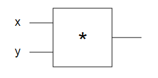

<h1>Neural Nets</h1>

<h2>Single gate in the circuit</h2>

<br>
<em>source : http://karpathy.github.io/neuralnets/</em>
<div>
	X = <input type="number" value="-2" id="single-gate-x" onChange="singleGate()" />
	<br>
	Y = <input type="number" value="3" id="single-gate-y" onChange="singleGate()" />
</div>
f(x,y)=xy
<br>
Would result in : <span id="single-gate-circuit"></span>

<script type="text/javascript">
//Chapter 1: Real-valued Circuits
function forwardMultiplyGate(x, y) {
  return x * y;
}
singleGate();
function singleGate() {
	x = document.getElementById('single-gate-x').value;
	y = document.getElementById('single-gate-y').value;
	singleGateCircuit = forwardMultiplyGate(x, y);
	console.log(singleGateCircuit);
	document.getElementById('single-gate-circuit').innerHTML = singleGateCircuit;
}
</script>